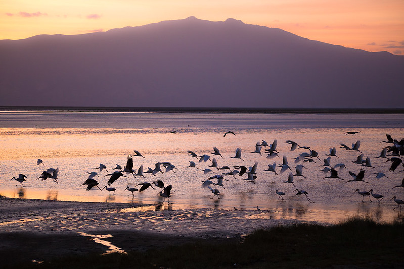
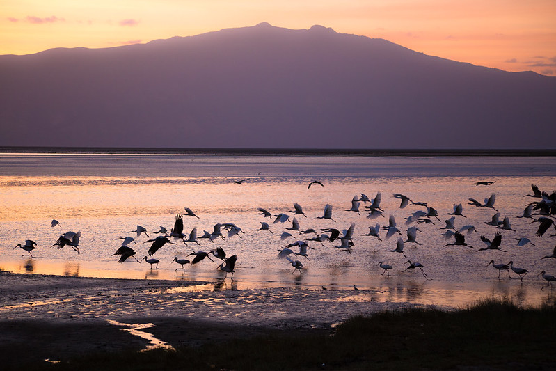

O mundo realmente esá repleto de coisas diferentes, mas agora, você ja deu uma olhada numa lista de lagos mais estranhos e misteriosos do mundo? não? então você está no lugar certo, aqui você poderá ver diversas obras naturais, bonitas, bizarras e perigosas que o mundo carrega!


 

MENÇÃO HONROSA! - LAGO KARACHAI